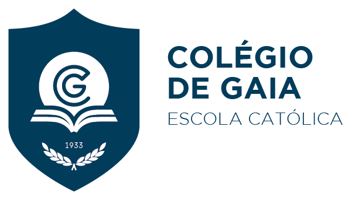

ISEP – Instituto Superior de Engenharia do Porto
CTeSP de Desenvolvimento Agil de Software
Desde 01/10/2025
Curso de Nível 5 ligado ao desenvolvimento de software

Colégio de Gaia – Escola Católica
Sistemas de Informação e Tecnologias (TSI)
De 12/09/2022 a 31/07/2025
Curso tecnológico de Nível 4 focado em informática e redes
Distinções e Prémios
1.º lugar em competição de clarinete.
2.º lugar nas Olimpíadas da Academia de Música Costa Cabral.